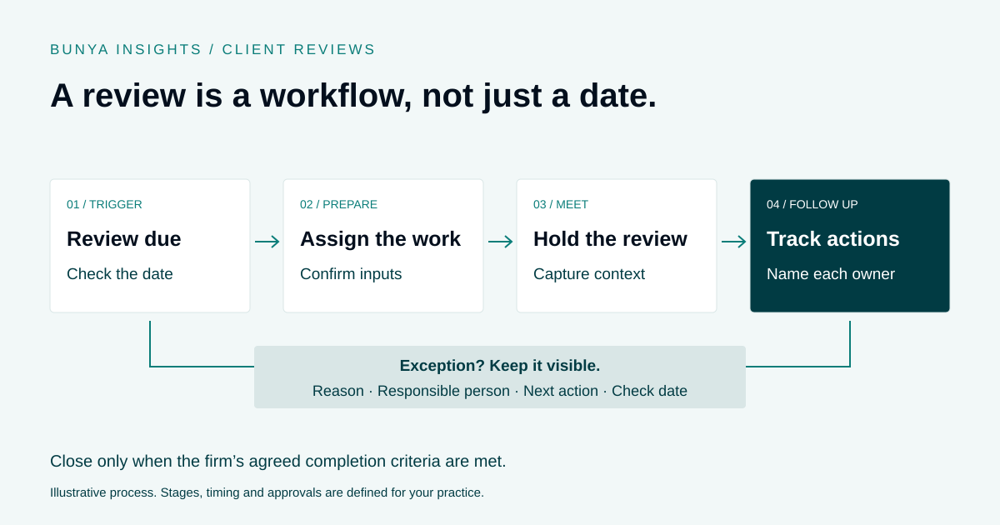

Practice operations
Client Review Workflow for Financial Advisers: A Practical Checklist
Make review work visible from the first trigger to the last follow-up.

Find where the handover breaks
A review may appear on a calendar without the preparation work being assigned. An invitation may be sent without anyone tracking the response. A meeting may be completed while its actions remain in personal notes.
Follow a few recent reviews through the actual process. Identify which steps have a clear owner and which depend on someone noticing a gap.
Define the trigger and the owner
Agree what starts each review cycle and how much preparation time the team needs. Check that the source dates and client records are complete enough to support that approach.
When the work is created, it should have an accountable owner and a clear next step. If a client cannot be contacted or a date changes, record the exception and assign the follow-up.
Use stages that reflect real progress
A simple sequence might cover preparation, contact, meeting, actions and completion. Define what needs to be present before the team moves between stages.
In Command Centre, review work can sit alongside client history and supporting documents. The exact stages, triggers and permissions are configured for the firm. AI-assisted preparation, where included, still needs review.
Review the queue, not just the calendar
A regular team check can focus on overdue work, unassigned tasks and items waiting for a response. Look at the reason a job is stuck rather than treating every delay as the same problem.
Start with a small group of reviews, test the process and refine it before expanding. Better visibility helps the team act; it does not remove the need to manage the work.
A worked example: the meeting moves, the work stays visible
Imagine a review is approaching, but the client asks to postpone the meeting. This illustrative example shows the handover decisions to define; it is not a customer case study.
- Record the change. The team records the postponement and its context against the review, rather than simply deleting the calendar event.
- Keep an accountable owner. A named team member takes responsibility for arranging the next contact and checking whether other work needs attention.
- Set the next action. The record states what happens next and when the team will check progress. Any applicable service requirements are assessed through the firm’s own process.
- Check preparation again. When the meeting is rearranged, the owner checks whether information or documents need updating before they are used.
- Track the follow-through. After the meeting, actions are assigned and reviewed against the firm’s completion criteria. Holding the meeting alone does not automatically close the work.
The improvement is visibility: someone can understand why the review is waiting, who is responsible and what will happen next.
What should a useful review queue show?
| Information | Why it matters |
|---|---|
| Client and review period | Identifies the relationship and the work being managed. |
| Due date and stage | Shows timing alongside actual progress. |
| Responsible owner | Makes accountability explicit, even where several people contribute. |
| Next action and check date | Turns a status into something the team can act on. |
| Waiting reason | Distinguishes missing documents, a client response and an internal handover. |
| Supporting record | Connects the task to the relevant notes, documents or approval. |
Keep the view focused. Detailed information can remain on the record, while the queue helps the team decide what needs attention.
A weekly review-work checklist
Use this as a starting point for a short team check, adapted to your firm’s cadence and responsibilities:
- Does every active review have an accountable owner?
- Which reviews are overdue or approaching their agreed preparation window?
- Which items have no next action or no check date?
- Are any client responses or missing documents awaiting follow-up?
- Have postponed meetings retained their review records and owners?
- Are completed meetings still waiting on actions or approval?
- Can a colleague find the supporting record for work marked complete?
Look for repeated causes of delay. If several jobs are waiting at the same handover, fix that part of the process rather than adding another reminder to each file.
Where can AI help with review preparation?
With agreed inputs and permissions, AI can help organise meeting context, summarise supplied information or prepare follow-up drafts. A reviewer still needs to check the source material, omissions and proposed actions.
Keep preparation and completion separate. An AI-generated pack does not establish that the review happened, that actions were completed or that professional requirements were met. In Bunya, the available skills and approval points are confirmed in the firm’s scope.
Common questions
Is a calendar reminder enough?
A reminder can prompt action, but it does not explain who owns preparation, what is outstanding or whether follow-up is complete. Connect the reminder to a workflow with those responsibilities.
Should every review follow the same steps?
A shared starting process helps, but the firm may need different paths for different circumstances. Define the variations and exception rules rather than leaving each team member to improvise.
What should we measure first?
Start with overdue work, unassigned reviews, items without a next action and time spent waiting at handovers. Compare changes against your own baseline rather than assuming a universal target.